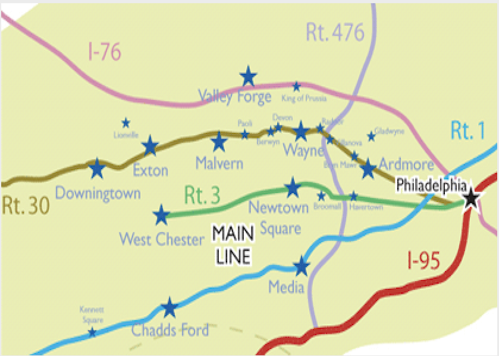
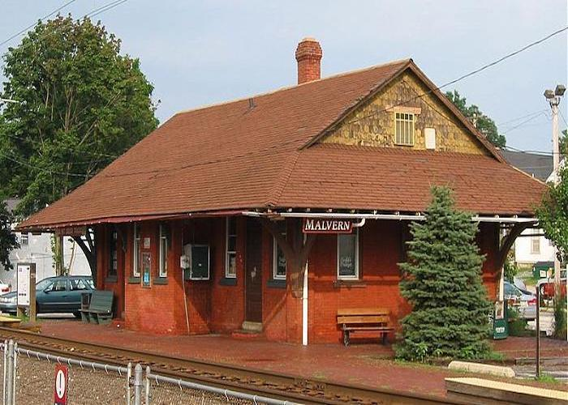

Life
By: Kaavya Anand

About
- Malvern, PA is located a close 25 miles outside of Philadelphia on the Main Line
- Malvern is a borough in Chester County
- All schools in the Great Valley School District are found in Malvern
- There are around 3000 people who live in Malvern, PA
- The battle of Paoli was fought in Malvern, and is on the National Register of Historic Places
- Learn More!


My House
- My parents purchased this house in 2002, and we've lived here ever since
- My house was about 3 minutes from KDM elementary school and 5 minutes from Great Valley High School
- There is a creek in the backyard that fosters a lot of wild life
- I have two neighbors, one of them has a swimming pool
- In the winter, it is really fun to go sledding down the driveway because it is so hilly
- My room has been painted purple to this day since I was 6
- I love this house and never ever want to move away!
Favorite Spots
- Dairy Queen is one of my favorite spots to hang out with my friends
- Venice Pizza is my favorite place for pizza in Malvern
- All of my friends also live in Malvern so I love hanging at my friends houses as well
- The malls in my area are also where my friends and I spend a lot of our free time